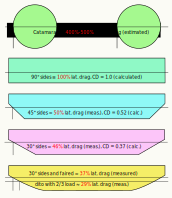

Contents | About | Contact
article 33, issue 14
Theo Schmidt
March 21, 2023
This is part two of a three-part series on maximising the efficiency of cable ferries. In part one it was suggested that the friction in the chain(s) of a cable ferry could be several times the hydrodynamic resistance due to the forward motion, especially in fast-flowing streams. In the following this is quantified, as well as solutions to the problem.
If a chain were stretched tightly across the body of water and a ferry could somehow pull itself along this without distorting the chain line, no friction would occur in the chain links. However, the normal way of implementing a chain ferry, described in part one, involves letting the chain lie on the bottom to be pulled up only in the vicinity of the ferry, engaging a powered chainwheel, and "after use" released again into the water to rest again on the bottom. The curve that a free-hanging chain assumes, from one point to another or from the ferry to the ground, is called a catenary and can be described by a mathematical function called the hyperbolic cosine. See figure 1 for one with proportions typical for the heavy chains normally used. In this way other shipping is not impaired by the chain and there is no limit to the length of a crossing. Indeed operation is also possible by following canals and rivers lengthwise (see https://en.wikipedia.org/wiki/Chain_boat). Under way, the chain hangs in two catenaries from the ferry to the bottom, a flatter one from the front and a steeper one from the back, as shown in figure 2.
Figure 1. This plot of the function y = a · cosh (x/a) – a with a = 0.6188 shows a catenary with its depth and half-widths of one unit each. The slope angle at the top is then about 68° and the length of each half-curve about 1.5 units.
Figure 2. Here the unit catenary is split into two parts in a minimal chain ferry configuration with one chainwheel and no other sheaves or pulleys. The vertical force component is equal to the weight of the chain part from the chainwheel tangent to the bottom. For a unit weight per unit distance this is here 1.5 units. The horizontal force component is here then 0.6 units and the resultant total chain tension 1.62 units. With the ferry at rest the two sides balance, shown in a dark color. With the chainwheel exerting an anti-clockwise torque, the front catenary becomes flatter and the forces increase. At the rear the catenary steepens and all force components diminish. This is shown in a lighter color. The resulting horizontal force to the right in this example is 1.0 - 0.3 = 0.7 units, and the maximum chain tension nearly three times this. Note that here one unit of chain slack (extra length) is "transported" along with the ferry.
If we initially assume that the ferry is stationary, the minimal chain tension is the weight of its longer part descending from the ferry to where it becomes horizontal, either on the ground or at the lowest point of a catenary not touching the ground. Some ferries can have externally tensioned or moved chains. These are on one hand some small self-cranked ferries that have additional cranks onshore in order to fetch the ferry if it is on the other side, e.g. the "Pünte Marscher Tief". And on the other hand the world's largest chain ferries, the three Torpoint ferries near Plymouth which each have two chains that are each tensioned to about 30 kN by onshore weights.
The weight of a catenary depends on the chain's size, its initial slope, and the depth of water. Taking the numbers of figure 2 and assuming a 10 mm chain with a weight of 19 newtons per meter (N/m) - includes some underwater buoyancy - and a vertical chain depth of 3 m, we get a weight of 19 x 3 x 1.5 = 85.5 N pulling vertically downwards. For the slope angle 68.2° shown, the horizontal force is 85.5 / tan(68.2°) = 34.2 N and the total chain tension 85.5 / sin(68.2°) = 92.1 N. On the other side of the chainwheel or ferry a mirror-image catenary provides a horizontal force of the same magnitude but in the opposite direction. In the same way (plotting and measuring) steeper or flatter catenaries can be estimated - an exact mathematical treatment would be more difficult. This figure of the profile of the river Aare at Scherzligen, Thun shows catenaries of a similar chain from nearly slack to highly tensioned. The values and curves are approximate and the highest figure 38 kN corresponds to a typical working load limit that should normally never be reached.
If the ferry is moving, figure 2 shows catenaries providing a propulsive force F = 19 x 3 x (1.0 - 0.3) = 40 N. In part one the propulsive power requirement of a 7.5 m pontoon-type catamaran was introduced. This gives us an approximate formula for speed V = square root (F / 130) in units of m/s and N. Therefore in this example 0.55 m/s with 40 N. As additional force is required to overcome friction, the forward catenary will need to be stretched more for this depth of water.
So far we assumed the ferry to be away from shore in water of constant depth. If the ground slopes, the catenary towards the deeper end develops more force. This is particularly noticeable with the ferry at a shore or quay, where the chain part towards the shore is more or less horizontal.
With the chain held by the chainwheel, the chain's outward horizontal force component is balanced by an opposite force by the shore part -> the ferry remains stationary.
If the shore part becomes unattached or breaks, the intact part of the chain pulls the ferry a very short distance outwards until it comes to a stop as the catenary slope becomes 90°. If there is wind or current, the ferry aligns itself, forms a new catenary, and provides holding force due to the weight of the considerable chain length lying on the ground. In most cases the ferry is thus securely anchored: a good safety feature. If the part to the water becomes unattached or breaks, the ferry remains moored. In both cases the ferry is only secure up to the extent of the drive's friction. If this is limited, a brake must be fitted in order to ensure safety in these cases.
With an intact chain, if the chainwheel is free to rotate or the drive has little friction, the chain tension on the water side can rotate the chainwheel and this now produces a force driving the ferry towards the shore. This behavior can be seen in this video at 1'45". In order to leave the shore, the drive must provide at least this force, which diminishes as soon as a catenary develops on the shoreward side. Both conditions provide good safety features:
If a ferry operates in a river or tidal stream, or lateral wind, it is displaced and the catenaries become more stretched and skewed. Instead of the two-dimensional profiles described earlier, the catenaries are angled also when viewed from above and where they touch the bottom some dragging and energy loss must occur. An analytical treatment of this three-dimensional situation would presumably be very difficult and even a numerical simulation rather unwieldy. This is because the position of the ferry depends to a certain extent on its "history", that is on where the chain was laid during the previous crossing. However, if we assume enough tension to pull the chain almost or completely free from the bottom, the position of the ferry is more predictable, with the excess chain length a major factor. Figure 3 shows the plan view of a cable ferry between two jetties in a current with the catenaries assumed almost or completely free from the ground. The positions are shown for 2% projected excess cable length, and one position for 5%. The real cable length of these catenaries must be greater, unless the cables are assumed completely stretched, or floating like buoyant ropes. The highlighted area shows where maximal scouring could occur if the catenaries just touch the bottom. This is relevant in the case of protected fish breeding areas, as is indeed the case at the proposed site in Thun.
Figure 3. A cable ferry in a current with a highly stretched cable follows an elliptical path, viewed from above.
This now allows estimating the cable tension if the ferry's lateral resistance force is known. It happens that a (projected) cable excess of 3.28% results in a cable tension of double the ferry's lateral force from current and/or wind (see one possible calculation here). This is a useful rule of thumb. Obviously a longer cable would reduce the tension but also increase the distance travelled and the dragging where the cable touches the bottom.
As a numerical example we can use the catamaran described in part one. The lateral resistance measurements of the model suggested a plausible lateral drag coefficient CD of about 1, relatively independent of speed. The full-sized catamaran with half-submerged hulls would present about 5 m² lateral area A, and in a 0.5 m/s current flow V produce a force F = ½ρ·CD·A·V² = 500 x 5 x 0.5² = 625 N here, with water density ρ = 1000 kg/m³. With 1 m/s current F would be 2.5 kN and with 2 m/s current 10 kN. When doubled these values are still below the safe working load of the 10 mm chain suggested, but the catenaries are so stretched that shipping is impaired, so that the ferry cannot operate in these conditions if other vessels could cross the cable. Again consulting here, the current limit of our example would then be about 1 m/s, which was exceeded during ten summer weeks in 2021 (dark blue line).
The world's largest chain ferries, those three crossing the river Tamar near Plymouth, must operate 24 h per day irrespective of strong tides or heavy weather. To this aim, the six chains are not connected directly to the shore, but rather via pulleys to six 12 tonne counterweights, three on each side for the six chains. It seems from the diagram here that each chain's tension is thus normally limited to about 30 kN minus its friction on the slipway and if this is exceeded the chain lengthens, reducing the force. (This is far below the chain's minimal breaking strength of over 1200 kN, yet one snapped in 2022.)
The main point of this article is, however, that the cable tensions in a current can become much higher than those necessary for propulsion, which could remove the normal efficiency advantage of cable ferries and the possibility of using human or ambient power, unless ways can be found to reduce tension and friction. First we need to calculate the expected friction losses, in the following for chain and in part 3 for wire rope.
Viewed in profile the chain line angle at the ferry must for each catenary change through minimally 90° minus its slope angle. The chain must pass through at least one powered chainwheel on the ferry, as shown in figure 2, and usually additionally through a number of guiding pulleys, rollers, or fixed guides, as in figure 6. This requires every link engaging a chainwheel or pulley to articulate in relation to its neighbor by a small amount, and once again when the chain disengages and straightens. The total change of direction on a pulley, that is degree of wrap, does not count for this inter-link friction, only the amount of articulation occurring at the beginning and at the end. The angle of articulation depends on the ratio of chain pitch (= inside length of a link) to effective diameter of the wheel or pulley. For an ISO 4565 chain the pitch is three times the chain size (diameter d in figure 4). This movement produces a minimal amount of friction between the links - in addition to some at the surfaces of the pulley or chainwheel - and it is plausible to assume that its value is more or less a linear function of the force between these and the power loss this times the speed and times the number of wheels or pulleys subjected to this force. Figure 4 shows several links around a pulley with the one on the left engaging or disengaging. If disengaging with the chain moving to the left, the middle lying link must rotate relative to the next standing link. Initially we assume a sliding movement between these two links and to a smaller extent between the lying link and the pulley surface shown. Its effective diameter D, here nominally 12 d, would correspond to a sprocket with 6 teeth or pockets. As soon as the link has finished articulating the next one starts doing so. If we assume that the links slide against each other and neglect the smaller friction to the pulley, the friction should be the same as if a ring were continuously rotating around a rod with the same diameter d as the link, with the same rotational speed as the wheel or pulley, which decreases linearly with its diameter D.
Figure 4. Chain links articulating 30° with sliding movement.
Considering the previous definitions we arrive at a simple approximate formula for power loss due to link friction, per pulley:
P [W] = 2 · V [m/s] · d/D · F [N] · µ [1]
F is the tension between the links, V is the speed of the chain, mostly the same as the boat speed, and µ is the kinematic coefficient of friction. This coefficient is rather high with round-link chains, as there is a point-contact (crossed cylinders) between microscopically uneven surfaces that are unlubricated except with water. The "points" - actually small contact patches - tear away microscopic bits of material resulting in friction and wear. See for example frictional contact mechanics. According to "Predicting the wear coefficient and friction coefficient in dry point contact using continuum damage mechanics" µ from 0.3 to 0.5 can be expected. (This in contrast to roller chains where the links contain precise lubricated journal bearings and µ can be less than 0.1. See HPeJ article 27).Other than using the best available chainwheels and pulleys, how could this friction be reduced? Specially formed and hardened or low-friction surfaces come to mind, but with use these will eventually wear away leaving steel rubbing on steel again, if the chain is not replaced before. Another approach is to try to get the links to roll rather than to slide against each other. Figure 5 shows two links assumed to articulate in a rolling rather than sliding action, again through 30°. This can only happen if the static coefficient of friction µ is high enough; for 30° µ must be over 1. This is unlikely with most surfaces. The links may easily roll at small angles, say up to 10° - there is indeed little damping apparent if a chain is caused to oscillate at small amplitudes - but over this at some point they will slip and stick repeatedly. It is also evident from the drawings that large angles cause the chain to shorten if the links roll rather than slide, so there is an additional effect from the exact geometry of the chainwheel. The key is therefore to use large enough and precise enough chain wheels and pulleys so that slip-stick is avoided. Another - speculative - approach could be special high-friction additives or surfaces, such as artificial roughness or fine grit, again with the practical problem that these could wear away quickly. This picture of a large wooden chain carved by artist Lorenz Perincioli shows a rolling deflection through 30°. Normally the polished wood would slide, but in this case a small patch of double-sided sandpaper was placed between the links as a proof of concept.
Figure 5. Chain links assumed to be rolling through 30°.
To sum up: the (usual) small-diameter pulleys and chainwheels will give rise to µ between 0.5 and 1, but there is some hope of achieving smaller values with large enough diameters to promote rolling between the links. Large diameters are of course good anyway as per the formula. This also shows that friction is proportional to chain size (see section below), so that for this aspect, the smaller the better.
Now we work out some mechanical efficiency values, defined as η = propulsive power / (propulsive power + frictional power loss).
Taking first the values for "moving in still water" from figure 2 and subsequent calculations, we have 1.24 x 19 x 3 = 70.7 N chain tension on one side and 117.4 N on the other, at a speed of 0.55 m/s. Taking the dimensions from figure 4, we have a power loss on one side of 0.55 x 1/12 x 1 x 70.7 = 3.2 W and of 5.4 W on the other, assuming µ = 1. With the propulsive (output) power of 22 W calculated for this example (40 N x 0.55 m/s), a drive (input) power of 30.6 W (22 + 3.2 + 5.4) is then needed, giving an efficiency η of 72%.
Now for the second example, taking ten times the propulsive force, resulting in a speed of 1.75 m/s, a propulsive power of 700 W, requiring a forward catenary with a slope of about 45° (guesstimate), leading to a chain tension of about 200 N, a forward power loss of 1.75 x 1/12 x 200 = 29 W, a rear power loss of roughly 10 W, the result is then η = 700 / 739 = ~95%.
These efficiencies are higher than normally achievable by propeller drives, where the losses are mainly hydrodynamic and the opposing water speed is higher (apparent speed = vector sum of crossing speed and water current).
If the ferry is now subjected to 0.5 m/s lateral water current, we had calculated a chain tension of 625 N from this. Crossing at 0.55 m/s would give a loss of 2 x 0.55 x 1/12 x 625 = 57.3 W. Neglecting the smaller loss from the propulsion results in an efficiency η = 22 / 79.3 = ~28%. Crossing at 1.75 m/s it would be ~79%. This is quite good but at 1 m/s water current the figures become bleak. We had calculated a chain tension of 2.5 kN, so the efficiencies moving at 0.55 m/s and 1.75 m/s would be, respectively, 9% and 49%. (An excellent propeller drive could achieve slightly more.) At 1.5 m/s water current we had a chain tension of 10 kN, giving 2% and 19%. This is now worse than using propellers, which could achieve 3.5% respectively 37% in the same conditions. And all the above figures are for a single chainwheel and we haven't yet considered the additional guiding pulleys and perhaps chains used!
Chain ferries in tidal waters with strong currents mostly have two chains so that there is always a chain on the upstream side regardless of the tidal stream direction. Two chains obviously produce more friction than one, as more weight and more pulleys are involved. So one upstream chain is the preferred system if possible. Chain ferries in rivers mostly have one chain on the upstream side or a (taut) guiding rope on the upstream side and a propulsive chain on the downstream side. The last method is the best friction-wise, but the rope blocks other vessels at least temporarily. One central chain is also possible as used by the former chain ferries crossing the Kiel Canal (see in part one).
A single powered chainwheel as in figure 2 would be preferred friction-wise and is possible in still water if fairleads or guides are also fitted for when there is wind. These can designed to be normally non-touching. However, at least two pulleys are generally fitted at the ends as in the top configuration of figure 6. The Saugatuck chain ferry has such an arrangement - it seems uniquely - with additional fixed lateral guides that normally don't touch - see insert. It seems pretty efficient, as 24 passengers are transported with hand-cranking. The chainwheel here only has about 25° wrap. This works because the very first chainlink/pocket engaged provides most of the force. However, most chain-ferry designers seem to distrust the small angle of wrap at the chainwheel that this arrangement offers and fit two more pulleys in order to increase the wrap, making four pulleys and one chainwheel, shown in figure 6 center. An obvious solution to save a pulley and still get 90° wrap seems the arrangement shown in figure 6 bottom, but I know of no implementation. Some chain ferries such as the Emma at Sandhoven, Germany have 4 powered chainwheels fitted with 720° wrap. The Torpoint ferries per chain have one large (nearly 2 m diameter) chainwheel and six pulleys.
Figure 6. Chainwheel/pulley combinations for chain ferries, showing the drive fitted in seat lockers. The ferry is moving from right to left.
All these extra pulleys multiply the friction. If one chainwheel with power X and the same loss X gives X / (X + X) = 50% efficiency, 4 extra guiding pulleys of the same diameter result in about X / (6 X) = 17% efficiency. In our above example with a 1 m/s lateral current, using the four extra pulleys, the calculation results in only 7% or 16% efficiency for 0.55 m/s or 1.75 m/s crossing speed, respectively. Therefore it is important to reduce the number of pulleys as much as possible.
With respect to energy efficiency, costs, wear and scouring on the bottom, the smallest chain size should be chosen that does its job safely, although there may be other considerations. For small chain ferries operating slowly in shallow and sheltered still water, the chain tensions are very small and won't exceed the safe working load (SWL) or working load limit (WLL) of even the smallest marine chain sizes. Such light chains can lead to shallow catenaries that come near to the surface, so if there is other navigation on the body of water, the size must be increased in order to form sufficiently deep, i.e. steep catenaries. This can be determined by the methods shown early in this article after estimating the maximum expected forces. If the ferry operates in any appreciable water current, the major part of the chain tension is likely to come from this and the ferry's lateral resistance, and if there are other vessels navigating, the chain size must be chosen accordingly and/or ferry operation be curtailed above a certain current speed or whenever any other vessels or even small craft or swimmers could come near to crossing the chain. Chain data for welded chain, in particular the WLL, can be found at the US National Association of Chain Manufacturers Website. Note the different grades such as "grade 80 alloy chain" which signifies a material with an ultimate breaking strength of 800 N/mm².
It should be noted that chains are generally extremely reliable but even or maybe especially the strongest chains can fail unexpectedly. Such a rupture happened in June 2022 on one of the Tamar ferries in spite of being fitted with chains rated at 1274 kN minimum breaking load that are normally replaced every three years, according to Tamar Crossings. They found fatigue cracking in the weld of a chain link that had apparently been used longer than intended because of the Corona pandemic.
These specifications don't include the needed mass or weight values, which can be looked up in dealers' or manufacturers' catalogs. Figure 4 gives the values for ISO 4565 chain (very similar to DIN 766) in the sizes 6, 8, and 10 mm. For ferries with two chains instead of one, the chain size could be reduced somewhat, but not by half the WLL, as the forces only divide equally in symmetrical situations. This picture shows that when moored in a stream (here from above), all tension goes through the upstream shoreward corner and divides up away for the shore, about 75% now going through the downstream corner (the chains are fixed with nails).
Again taking our example, we had a chain tension of 2.5 kN in a 1 m/s lateral current. The diagram shows that here the chain part to the jetty is very near the surface, even when moving away, and a danger to any small craft trying to pass. Towards the river, the chain reaches bottom within several boat lengths, so would be OK for most small craft unless coming extremely close. A 2 m/s current, which occurred during one day in 2021 in the example location, would with a 10 kN catenary block most of the river except for very shallow craft passing well away.
Operating in wind or current, a chain exerts a lateral pull and enters and leaves the ferry not just with a vertical, but also with a horizontal angle. In order to accommodate this, so far we have seen fixed guides with generous radii or vertical rollers with small ones, as can be seen in this short video. The large chain ferries in southern England tidal waters seem to use relatively small rubbing plates as guides as in this video and in the insert, both by John Perry, of the Torpoint ferry. All these solutions cause the chain links to knock and articulate; the latter additionally generates sliding friction and in some conditions could block the chain completely, as could be the cause of the new (2017) Cowes Floating Bridge No. 6 requiring external pushboats during spring tides.
The only good solution for ferries in strong currents is at each end a large-diameter swivelling pulley that automatically follows the chain line in all directions. This photo of a Kiel Canal ferry shows one, although it is rather small, as it operates entirely underwater. A pulley above the water line can be larger. Figure 7 shows two solutions. Only one free axis of rotation is required, apart from the pulley-sheave itself, as coaxial as possible with the inboard chain line to the drive.
Figure 7. Two types of swivelling end pulleys. The one on the left can be mounted on the upstream corner or side of a hull. There is slight misalignment between the inboard chain line and the pulley's axis of rolling. On the right is a solution with perfect alignment that can be mounted in bearings inside the hull. Not shown are counter-weights that could be beneficial in order to avoid excessive flange contact when pulled sideways under light loads.
The preceding numbers show that chain ferries can become inefficient when operating in strong lateral currents even when the best feasible chain drive is implemented. As explained in part one, this can be countered to some extent by using the best hulls with respect to lateral resistance. The hydrodynamic resistance of boat hulls in the lateral direction is rarely documented or considered because it is normally not relevant except when sailing, and here not a low but rather a high lateral resistance is desired. We did discuss in the Thun ferry group whether the "sailing effect" of purposely added lateral resistance could aid propulsion even without yawing the ferry as described in the following sections, but came to the conclusion that through this the chain friction would increase more than the thrust in the direction of crossing.
Many displacement hulls present relatively blunt surface laterally, with side wall slopes from vertical to maybe 60°. The Experiment study on the towing resistance of a barge accurately measured a frontal drag coefficient of 1.1 for a rectangular model with 0.6 m length, 0.45 m width, and 0.1 m draught, speed-independent from 0.06 to 0.24 m/s (no wave-making, waves cannot propagate at less than 0.231 m/s). This is also what I measured, less accurately, with the half-submerged cylindrical hull catamaran model described in part 1, for the lateral drag coefficient using the lateral area of both hulls. At full size the wave-making is not zero, but slight in this direction and the form drag is the largest resistance component. For the full-sized 7.5 m long catamaran with 0.33 m draught assumed, we get 2.5 m² lateral surface per hull. The total lateral force (F = ½ water density · area · coefficient · speed squared) is then ~2.5 kN in a 1 m/s water current. This would produce up to ~5 kN chain tension according to the rule of thumb given earlier - much more than the chain tension produced in still water. The required motive power is higher by the same factor. Figure 8 shows the numbers for the example catamaran, using formula 1 and assuming one 10 mm chain, five 200 mm pulleys, and µ = 1. Although the total power required still seems low compared to that needed for a free ferry, it more or less removes the possibility of using human power or direct solar power and it seems very inelegant to waste so much energy in simple friction when it can be reduced with a better hull shape.
Figure 8. Calculated power versus crossing speed for 7.5 m chain ferry in zero, 0.5 m/s and 1 m/s currents. The straight lines are due to the chain friction, the curved lines due to this plus normal water resistance.
We now turn to the flat-bottomed hulls that are better-suited in lateral currents. If the plan area or the cross section area is similar to the previously considered catamaran, for the same displacement the draught of such hulls and therefore also the lateral area is considerably smaller, so the lateral drag is less even with vertical sides and gets better the more sloped the sides can become. However, the wetted surface area is larger and the drag in longitudinal direction higher than with a catamaran. As described in part one, I made a series of flat-bottom models, actually repeatedly altering the same one, 0.3 m long and 0.2 m wide and loaded to 0.85 kg displacement. All sides were bevelled, first 45°, then 30° (entry angle between side and waterline), then also faired, i.e. the underwater edges rounded. They were towed with a 30 g falling weight and realised speeds between 0.3 and 0.4 m/s with corresponding frontal (or lateral) drag coefficients between 1 and 2, whether towed longitudinally, laterally or even diagonally. This is twice what is expected, probably due to the friction of two pulleys in the towing line. Therefore scaling the absolute values up to full size is not valid until this (not yet known) friction can be subtracted. The relative values for the bevelled model are given in figure 9 along with calculated drag coefficients (CD) from this technical report (PDF 3.3 MB, p. 27). This suggests, for multi-thousand-ton barges, a formula for CD as a function of the entry and exit angles of both bow and stern: CD ≈ 0.01 (angle in degrees) + 0.06. This gives almost 1.0 for 90°, a completely rectangular box. This isn't far from the measured-model value of 1.1 given earlier. The 100% definition in figure 9 is CD = 1.0, giving an approximate correspondence between the relative measured values of the model and the full-size calculations. These calculations are for longitudinal drag. As we are assuming no wave drag, mostly form drag and little wetted surface drag, the lateral CD values should be almost the same. The figure also shows one value for reduced loading and an estimate for a catamaran with the same underwater cross sectional area. It has to be longer than the flat-bottom shapes and so has more lateral area, but the main effect is the more than twice greater draught than the box. It is taken once for each hull, giving 4-5 times the lateral area and drag.
Figure 9. Hull profiles with relative drag percentages corresponding, where noted, to tow test measurements. Also shown draughts, calculated CD-values, an estimate for a catamaran and the best shape with reduced displacement.
There is a large improvement in lateral drag when going from a catamaran to a flat-bottomed hull, and again going from a box shape to one with gentle and preferably rounded entry and exit angles. Overall at least an order of magnitude. This reduces the chain friction by the same amount, but effectively even more, as the measures reinforce each other. A low-drag hull can use a smaller-size chain which can further reduce friction, which in turn reduces the size of motors and batteries and weight. The proposed chain ferry over the Aare at Thun could, when optimised, operate even in summer with well under 1 kW peak power.
The ultimate solution for chain ferries in moving water is probably the yawing turntable catamaran introduced in part one. Here are some numbers.

Figure 10. Schematic of a turntable-catamaran with optimised hulls, deck on a turntable, and chain drive with motor and inline-gearing to chainwheel, two jockey-pulleys and two end-pulleys, crossing (to the right) at the same speed as the current (from above). Diagrams of a similar craft show it stationary at a jetty, getting slowly under way, and under way with a high ratio of crossing speed to current speed.
The hulls are set to always point into the apparent current by means of a rudder or a motorised electric control system. Their lateral resistance is then irrelevant and the hulls can be as long and fine as suitable for a minimal frontal resistance - although keeping in mind that they must keep clear of the end-pulleys and chain when yawing. This means that at typical speeds wave and form drag are very small and a calculation of the skin friction drag alone gives a good "best case" estimate. Using this calculator and assuming a wetted surface area of 5 m² for a hull as efficient as as a rowing shell, but displacing 1 t, it would have a resistance of only about 8.5 N at 1 m/s water speed, or 17 N for the whole catamaran with 2 t displacement. But if crossing at 1 m/s in a 1 m/s lateral current, the speed to use is the apparent water speed. This would here be 1.414 m/s and the total resistance about 32 N. Of this, the lateral and longitudinal components would each be 32 / 1.414 = 22.6 N. This results in a propulsive power of 22.6 W and only about 45 N chain tension from the lateral drag, from the rule of thumb given earlier. Both values are small compared to the tension and friction loss from the chain weight itself in any appreciable depth of water. Therefore the lightest available chain should be used that is compatible with safety considerations. This seems to be 6 mm for alloy steel marine chain, with a mass of 0.84 kg/m (figure 4) and an underwater weight of ~7.2 N/m. If we use the catenary tension values of the Aare example profile, those values should thus be multiplied by 0.4 (7.2/17.9). The 45 N from above are still easily accommodated. Let us now calculate the friction for one 6 mm chain with one chainwheel and 4 pulleys of each 0.2 m diameter; the result from formula 1 for 45 N is 13.5 W. This is less than the propulsive power and the total could easily be provided by a single human. Repeating the calculation for the probably extreme case of trying to cross at 2 m/s in a 2 m/s current, we get 115 N for the total resistance (not exactly 2 x 32 because the skin friction calculator considers the speed-dependent Reynolds number). This has lateral and longitudinal components of ~81 N each. The propulsive power is thus 2 m/s x 81 N = 162 W. The chain tension could be twice 81 N, giving almost 100 W additional friction loss per the formula. Even in these conditions this vessel could cross by human power or easily with solar energy.
Although the turntable-catamaran needs only very little power, it would of course be even better to operate it as a reaction ferry that exploits the water current and needs no external energy at all. This is done by yawing the hull(s) an appropriate angle to the apparent current in order to give a sideways thrust, typically 5-10° towards the direction of crossing. This generates a force R that can be resolved into a component in direction of the apparent current, called drag D, and a component at right angles to this, called lift L. These are terms used in sailing or aeronautics and an important figure of merit is the lift-to-drag ratio, or L/D. Typical sailing hulls with centerboards have L/D ratios of 3.5 and very good ones 4.5, as can be measured in towing tests. Hulls without centerboards or keels achieve less; e.g. L/D = 2 for the model catamaran shown in part one, when half-immersed. The resultant R can also be resolved into a component in direction of the river current (lateral drag) and a component in the direction of crossing: this is the thrust T (green in figure 11).
Figure 11. Hydrodynamic forces for a L/D ratio of 3.75 and equal crossing and current speeds. The ferry is crossing to the right and the water current is coming from above. Only one of the catamaran hulls shown, without centerboard and rudder. It is shown yawed 5° away from the apparent water current.
The ferry crosses at the speed at which the thrust overcomes the friction of the reaction cable, in this case the chain friction (red in figure 11). As worked out earlier, this is about proportional to the chain tension, to the ratio of chain size to pulley diameter, to twice the number of pulleys, and to a friction coefficient assumed to be 1. For the chain tension we use the rule of thumb described earlier.
The relationships shown in figure 11 with L/D = 3.75 and crossing speed to current speed (Vcr/Vcu) = 1 are valid for the set of chain and pulley values used. What other speed ratios are achievable? A spreadsheet evaluating these numbers confirms that in order to achieve a Vcr/Vcu ratio of 1 with one 6 mm chain and five 200 mm pulleys, a L/D ratio of at least 3.75 is needed, as drawn in the figure. If the L/D is 2 (no centerboards), a Vcr/Vcu ratio of about 0.65 results. If the L/D were 4.5 and only 2 pulleys used, or 3 pulleys of 300 mm diameter, a ratio of 2 could be achieved. This would require large and efficient centerboards on each hull. Two pulleys are sufficient for an unmotorised turntable reaction chain ferry.
Nobody to my knowledge has yet constructed a turntable reaction chain ferry or even a model, but many reaction ferries exist that use wire ropes and don't need a turntable. Especially the type that is tethered to pulleys travelling on a tensioned overhead cable can achieve Vcr/Vcu ratios of 1 even with a flat-bottomed hull. The spreadsheet document contains a second calculator for this situation that appears to support the numbers. Even if not accurate, they show that a turntable reaction chain ferry is slower than a normal reaction ferry with the same hull, but could achieve useful speeds with efficient hulls and lateral surfaces. (Interested readers can vary the inputs of both spreadsheets with something like Libre Office; other programs may only show static tables.) Chains have so far not been used at all with reaction ferries except when belayed and also pulled by hand, with the two (originally three) rather slow Oste ferries in Germany. (See video, albeit with almost no current.)
For turntable-ferries in such variable currents, the best solution might be a hybrid one, an option that normal reaction ferries don't have unless they use propellers (which some indeed do, but only for manoeuvring). That is, in strong currents the turntable ferry would operate in reaction mode moving entirely by means of the water stream and the motor could even be used as a generator for charging batteries. In medium currents there should be a clutch allowing to disengage the motor and allow the chain to move freely. When the crossing times become too long, the clutch is engaged again and the motor is powered. The hulls can still be set at an angle appropriate to provide some force, in effect "motor-sailing".
In strong currents a zero (external) energy turntable reaction chain ferry is entirely feasible, even though it has never been done. In weak currents the same applies to a motorised turntable chain ferry. For variable currents like in our example location it could also be hybrid, even though posing greater technological and legal challenges. The technical realisability is evident in this video of the world's only turntable ferry, even if the turntable is there for another purpose than holding a chain.
Part three of this article will compare chain and wire rope for cable ferries.
{kind=link}
{kind=link}
{kind=link}
{kind=link}
{kind=link}
{kind=link}
{kind=link}
{kind=link}
{kind=link}
{kind=link}